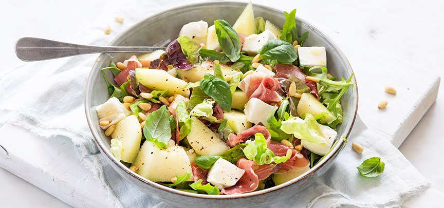

Salade met meloen en ham
Heerlijke frisse salade met meloen, parmaham en mozzarella. Lekker als voorgerecht of bijgerecht
Ingrediënten
- ½ kleine galia of cantaloupe meloen(400 gram)
- 75 gram sla
- 6 plakken parmaham
- 1 bol mozzarella
- Handje pijnboompitten (geroosterd)
- verse basilicum
Dressing
- 3 eetlepels olijfolie
- 1 eetlepel honing
- 1 eetlepel wijnazijn
Bereidingswijze
- Meng de ingrediënten van de dressing door elkaar. Snijd de meloen indien nodig in stukjes.
- Meng de stukjes meloen en de dressing door de sla en meloen.
- Snijd de mozzarella in stukjes en scheur de parmaham in stukken. Verdeel over of door de salade. Garneer de salade met de pijnboompitten en wat verse basilicum.
